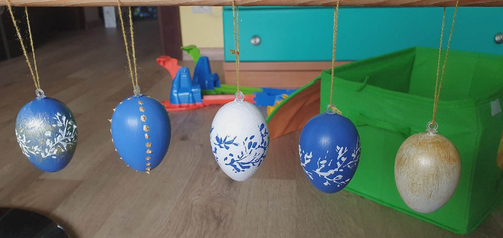
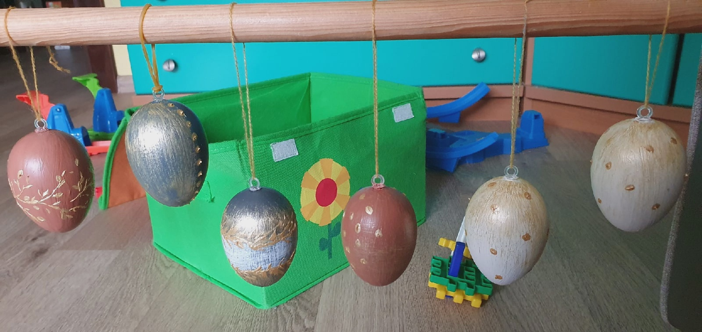

Easter Decoration by Karina
Process
The creation process begins with the purchase of materials.
These are acrylic paints, brushed and plastic eggs.
Next, the first coat of paint is applied. A design is coming up. Each set is individually designed. Created. The finished prduct is packaged in beatiful box with a bow.

